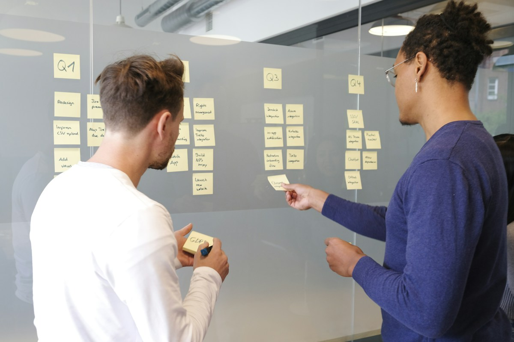

Class 01 · Project Management Concepts
Define projects, objectives and deliverables; explore constraints, the project life cycle and stakeholder engagement.
Business · Business Administration · Semester 1

Project Management develops the methods needed to turn an idea into a planned, coordinated and controlled project. Across 16 classes, you will connect project objectives and customer requirements with scope, schedules, resources, costs and risk.
The course begins with identifying projects and developing proposals. You will then define work and responsibilities, build network diagrams and schedules, and analyse resource use and project performance. Later classes address risk, closure, leadership, teamwork and communication before the final review.
Worked examples, case analysis and collaborative tasks connect the tools to practical decisions. You will practise explaining trade-offs, documenting a plan and evaluating how a project is progressing.
One class per teaching week, with two academic hours per class. The course comprises 32 academic hours, grouped into five modules and a final review.
Define projects, objectives and deliverables; explore constraints, the project life cycle and stakeholder engagement.
Identify project opportunities, compare selection criteria and explain project charters and requests for proposals.
Develop a proposal that connects the proposed solution, customer requirements, schedule and costs.
Define scope and quality requirements, then break deliverables into work packages using a work breakdown structure.
Assign responsibility, define activities and arrange dependencies in a project network diagram.
Estimate activity resources and durations, and calculate earliest start and finish times using a forward pass.
Calculate latest start and finish times, determine slack and identify the critical path.
Update schedules using actual progress and changes, and evaluate approaches to controlling project duration.
Identify resource constraints and prepare a resource requirements plan that supports the project schedule.
Apply resource leveling and compare schedules when available resources limit the work that can be completed.
Estimate activity costs, develop a time-phased baseline budget and determine the earned value of completed work.
Compare planned value, earned value and actual cost; interpret performance measures and forecast project costs.
Identify and prioritise risks, plan responses and monitoring, then review closure, customer feedback and lessons learned.
Explore project-manager responsibilities, delegation, team development, conflict resolution and ethical teamwork.
Prepare a communication plan, facilitate meetings and present clear reports while controlling document changes.
Connect the course concepts, review project-management methods and present an integrated account of project planning and control.